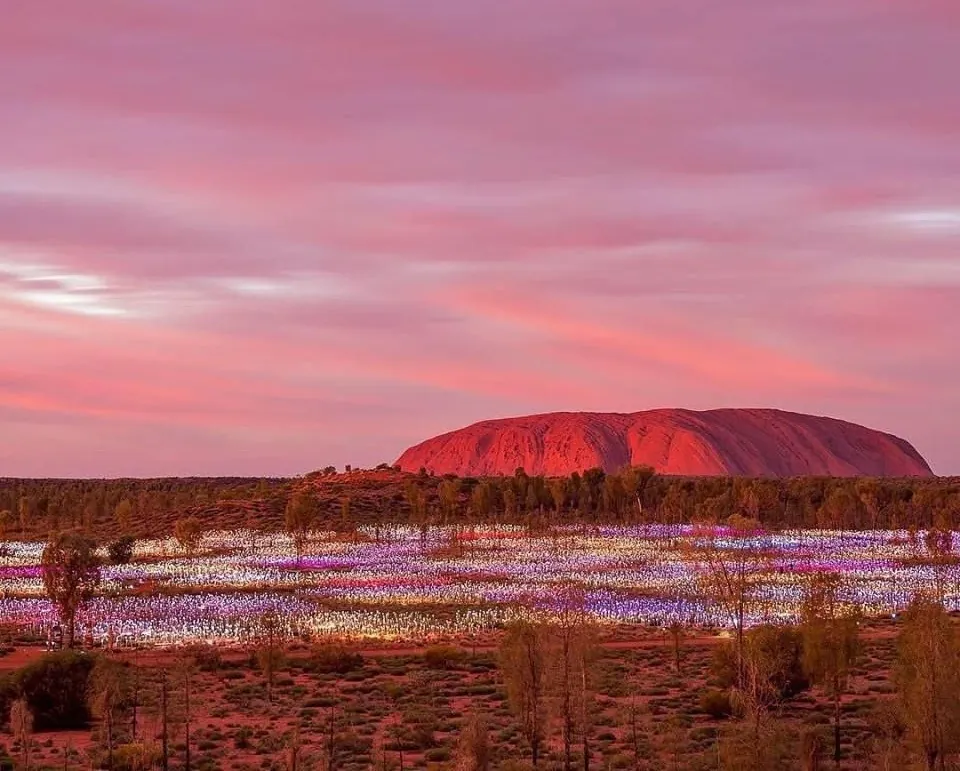
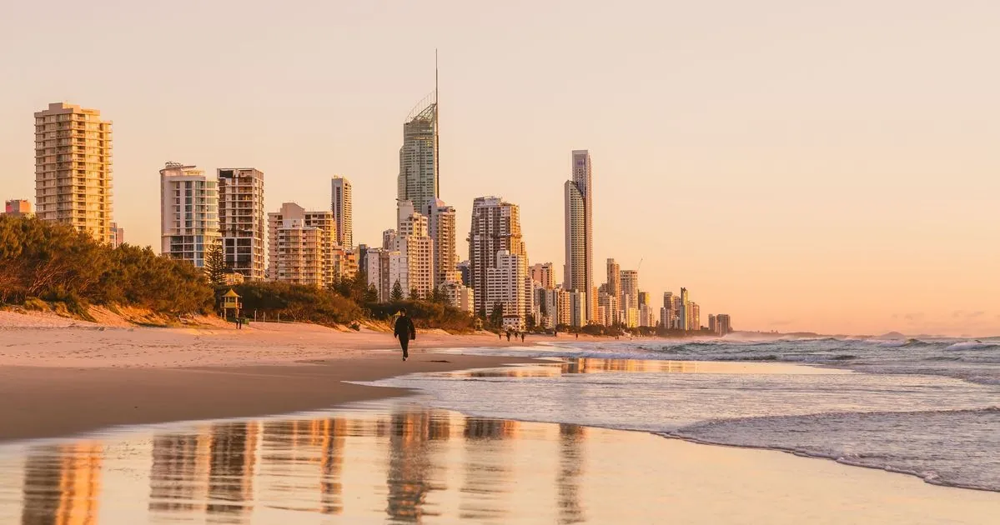
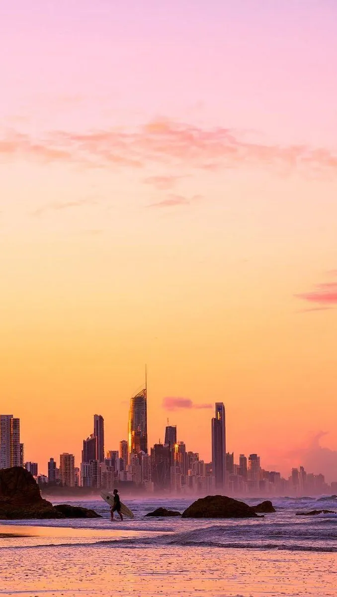

АВСТРАЛИЯ
Три стихии · Июль 2026
Воздух · Огонь · Вода
Листайте
Сценарий путешествия
Путешествие по континенту, выстроенное как последовательная смена состояний — от городской культуры к дикой природе, через сакральный центр континента к абсолютному расслаблению у океана...
Большие города как акты одного путешествия
3 города · 3 настроения
Из чего соткан маршрут
Маршрут
Континент за 15 дней
0дней
0стихии
0перелёта
0км дорог